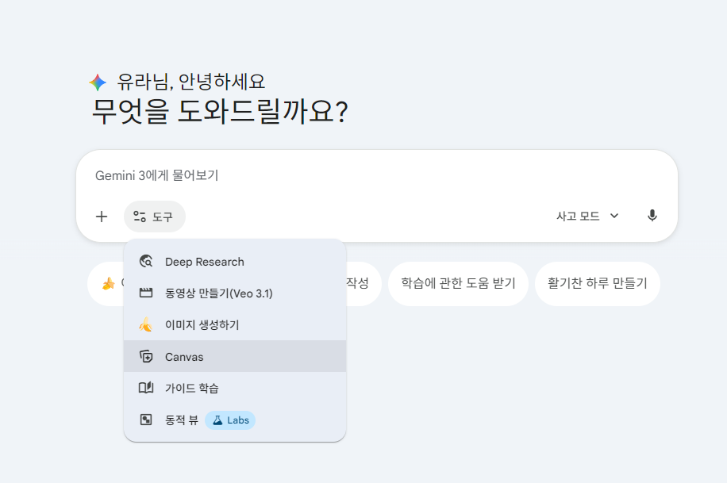

캔버스 아이콘 클릭하기
새로운 작업을 시작하려면 먼저 캔버스 아이콘을 클릭하세요.
프롬프트 입력하기
원하는 결과물을 얻기 위해 구체적인 지시사항을 입력합니다.
예시 프롬프트)
프롬프트로 수정해 보기
생성된 결과물을 더 나은 방향으로 수정할 수 있습니다.
예시 프롬프트)
상호작용 더하기
탭 메뉴와 같이 사용자가 직접 조작할 수 있는 동적인 요소를 추가할 수 있습니다.
예시 프롬프트)
미디어 더하기
영상이나 이미지 같은 미디어 자료를 추가하여 콘텐츠를 더욱 풍부하게 만들 수 있습니다.
영상 추가 예시
예시 프롬프트)
이미지 추가 예시

예시 프롬프트)
(새 대화) 상호작용이 되는 간단한 게임 만들기
제공된 자료를 바탕으로 간단한 퀴즈 게임을 만들 수 있습니다.
자료 예시
고려와 거란의 관계
고려가 세워지고 성장하던 시기, 고려 주변에서는 큰 변화가 있었다. 당시 중국 대륙에는 황해를 건너 송나라가 세워졌고, 고려의 북쪽에는 거란과 여진이 있었다. 거란은 후에 요나라가 되는데, 고려를 총 세 차례에 걸쳐 침입하였다.
거란의 1차 침입
거란이 성장하면서 발해는 거란에 의해 멸망하게 되었고, 고려는 발해를 멸망시킨 거란을 믿을 수 없는 나라라고 생각하여 멀리 하였다... (중략) ... 서희는 거란의 장수와 담판을 벌였다. ... 담판의 결과, 고려는 송과의 관계를 끊고 거란과 외교 관계를 맺기로 약속하였으며 압록강 동쪽에 강동 6주의 땅을 얻게 되어 이를 개척하였다.
거란의 2차 침입
고려가 송과 외교 관계를 계속 이어 가자 거란은 고려를 다시 침입하였다. ... 양규의 군대는 거란군에 여러 차례 승리를 거두며, 포로가 되었던 3만여명의 고려 사람을 구해 냈다...
거란의 3차 침입
... 강감찬이 이끈 고려군이 귀주에서 거란군에 큰 승리를 거두었다. 이를 귀주 대첩이라고 한다. ...
예시 프롬프트)
원하는 방향으로 수정시키기
만들어진 게임에 시각적인 효과를 더해 완성도를 높일 수 있습니다.
예시 프롬프트)
호스팅하기
완성한 코드는 다양한 방법으로 호스팅할 수 있습니다. 무료로 쓸 수 있는 간단한 방법 중 하나는 구글 사이트 서비스를 활용하는 방법입니다. (2차시에 계속)